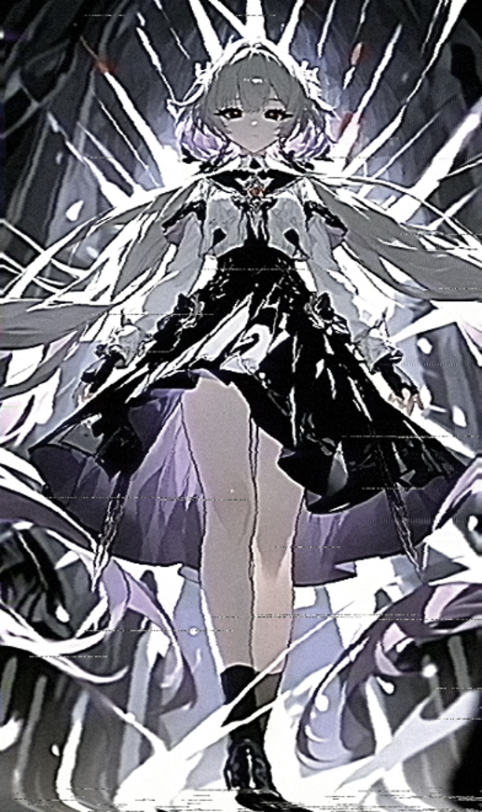

【秘匿指定コード：CONFIDENTIAL — TYPE 13】
このデータベースへの許可無きアクセスは固く禁止されています
違反者は追跡、特定、■■されます
■ 公認S級フィクサーライセンスの認証が確認されました ■
データを解凍中。しばらくお待ち下さい
■以下の文書は印刷・スクリーンショット・外部送信を原則禁じます■
重大な違反が確認された場合は相応の処置を取らせて頂きます
「歓喜なさい。“死”が貴方を迎えに来たわ」

〜訪れる者に、安らぎはない〜 「死神」として顕現した際の記録。周囲に見える光条は虐殺棺具の残光と推定され、 通常の観測機器では正確な輪郭を捉えきれない。
本個体は、神霊土体「敵界」のバグポイントの一つとされる完全封鎖都市裏ロンドンにおいて 出生が確認された半エネミーであり───
出生の経緯は、かつて裏ロンドンに滞在していた稀人が死霊種と関係を持ったことに起因すると 推定されており、当該個体は禁忌の落胤として記録されている。これが【DEATH】のアルカナを 冠するS級フィクサー、グリム・ネームレス――正確にはグリム・タナトフィリアの正体である。
出生の理由が不明のまま単身で裏ロンドンに放置された経緯が確認されている。当該個体には、 既に死体である状態を保ちながらあらゆる病理及び生命の危機に適応するという規格外の能力が 先天的に備わっていたが、これをもって裏ロンドンが個体にとって安全な環境であったとは言えない。
魔女の時間の及ばない裏ロンドンの環境は、当該個体にとって過度に静穏であったと記録されている。 この状況を打開するため、個体は長期にわたる準備の末、裏エッフェル塔の番人への接触を決行した。 目的は、裏ロンドンには存在し得ない生の実感を得ることにあったと推定される。苦難の末に塔を制圧し ………
以降、裏ロンドンで得た遺留品の売却及び独自のエネミー討伐により生計を立てていたところ、 フィクサー協会の関知するところとなり、現在に至る。
なお、当該個体がS級フィクサーである事実は協会内において公知であるが、大アルカナ十三番目に 該当する事実については、いかなる資料においても意図的に非開示とされている。理由として 以下の説が併存する。
調査の結果、これらは全て事実として確認されている。
当該個体は人間の血が半数程度混入しているためか、他の死の近縁種と比較して 死生観が人間的傾向に近いことが確認されている。死を無差別に希求するような言動は 観測されていない。
個体の認識において、死とは生命循環における最終工程として位置づけられている。理想とする死の 形態は、臨終の際に満足のいく人生であったと総括できるような、家族及び子孫に囲まれた自然な 老衰であるとされる。すべての生命は自然な経過の末に死に至るものであり、この理解に基づき、 個体は生と死の境界に対して肯定的な認識を持つ。
基礎能力及び異能に関して、特記すべき追加情報は確認されていない。個体がもたらす死は 超常的な力によるものではなく、裏ロンドンにおける実戦経験を通じて習得された純然たる暴力 に起因する。人が最も生命の危機として認識しやすい形態であるため、対峙する者に対して 強い恐怖を与える傾向がある。
「死神」として戦いに赴く時のみ、グリムが取り扱う特殊異産群。計8つの薄い棺桶のような自律機動翼を 鎖で繋いだような本体の内部には、棺ごとに別種の異産が納められている。